airquality$day_cntr = 1:nrow(airquality)
ggplot( airquality, aes( day_cntr, Ozone ) ) +
geom_point(na.rm=TRUE) + geom_line()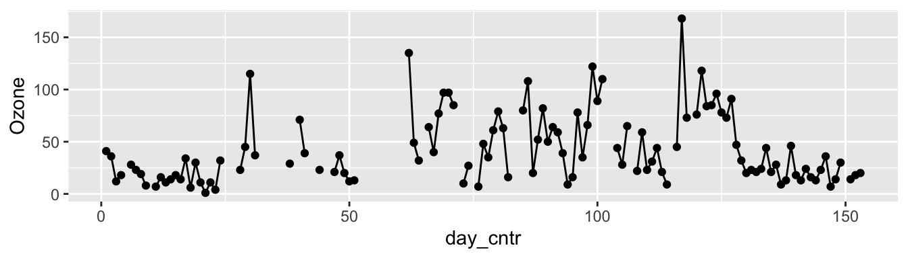
ggplot( airquality, aes( day_cntr, Ozone ) ) +
geom_point(na.rm=TRUE) + geom_line() +
theme_minimal()
This document provides several simple plotting tips for using RStudio to make plots (primarily using the ggplot2 package in tidyverse). These are all very simple tricks that can radically enhance the legibility of a plot. This document also covers how to save your plots so you can use them in presentations and other documents, and how to control the size of your plot in a R Markdown document.
Themes in ggplot give you a bunch of default options for plotting. For example, you can get rid of the grey background of plots with the theme_minimal() command.
airquality$day_cntr = 1:nrow(airquality)
ggplot( airquality, aes( day_cntr, Ozone ) ) +
geom_point(na.rm=TRUE) + geom_line()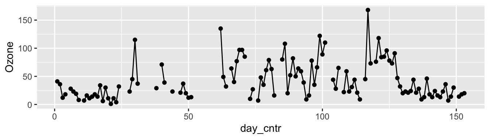
ggplot( airquality, aes( day_cntr, Ozone ) ) +
geom_point(na.rm=TRUE) + geom_line() +
theme_minimal()
I also quite like Tufte theme in the ggthemes bonus library (this library is a library of various themes with styles good and bad):
ggplot( airquality, aes( day_cntr, Ozone ) ) +
geom_point(na.rm=TRUE) + geom_line() +
ggthemes::theme_tufte()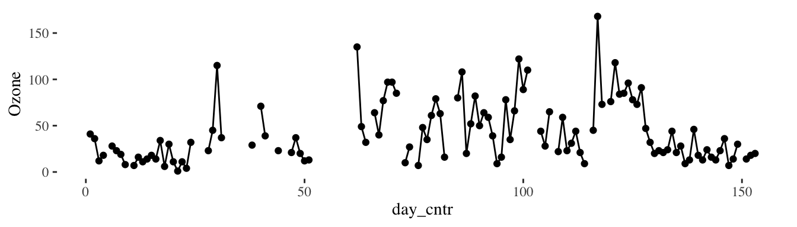
You can also set the theme globally:
theme_set( theme_minimal() )The labs() command is critical for getting labels for your plot. The scale_x_continuous() (or y) allow you to control the scales on each axis. Also, there is a nice package, scales that will format your x and y-axes. Witness!
library( scales ) # for label_dollar(), below
ggplot( sat93, aes( expend, tot_sat ) ) +
geom_point() +
scale_x_continuous( labels = label_dollar() ) +
labs( title = "Cost per pupil vs. Average SAT of state",
y = "Average SAT",
x = "Expend / Pupil" ) +
theme_minimal() +
scale_y_continuous( limits = c( 750, 1250),
breaks = c( 750, 1000, 1250 ) )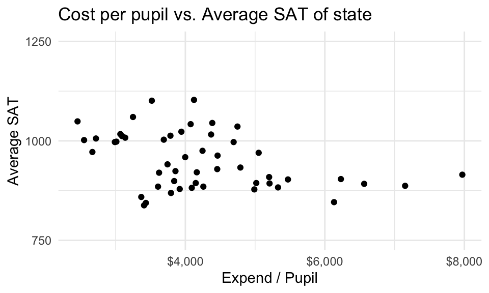
If you are making a bunch of lines and want to color them, you can do so by giving them all names and then letting R pick the colors for you. This also lets you have a nice legend telling you which color is which. Also note how you can put a name for your legend inside labs(). Witness!
library( scales ) # for label_dollar(), below
ggplot( sat93, aes( expend, tot_sat ) ) +
geom_point() +
scale_x_continuous( labels = label_dollar() ) +
labs( title = "Cost per pupil vs. Average SAT of state",
y = "Average SAT",
x = "Expend / Pupil",
color = "smoother") +
geom_smooth( aes( col = "linear" ), method="lm", se=FALSE ) +
geom_smooth( aes( col = "loess" ), se=FALSE ) +
theme_minimal() +
theme(legend.position = "bottom" )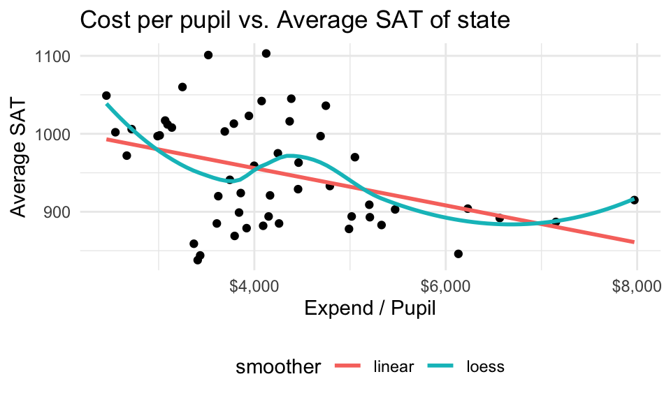
If you set the scale of your plot via scale_x_continuous() you will drop data from your analysis. If you use coord_cartesian() you will zoom in on the specified window, but it will be using all the data for smoothers, etc. This can be an important difference:
ggplot( sat93, aes( expend, tot_sat ) ) +
geom_point() +
geom_smooth( se=FALSE ) +
coord_cartesian( xlim=c(4000, 5000 ) )`geom_smooth()` using method = 'loess' and formula = 'y ~ x'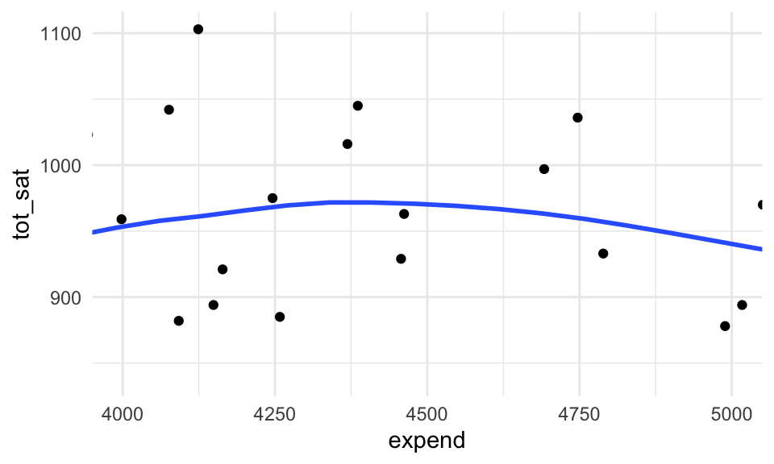
ggplot( sat93, aes( expend, tot_sat ) ) +
geom_point() +
geom_smooth( se=FALSE ) +
scale_x_continuous( limits = c(4000, 5000 ) )`geom_smooth()` using method = 'loess' and formula = 'y ~ x'Warning: Removed 36 rows containing non-finite outside the scale range
(`stat_smooth()`).Warning: Removed 36 rows containing missing values or values outside the scale range
(`geom_point()`).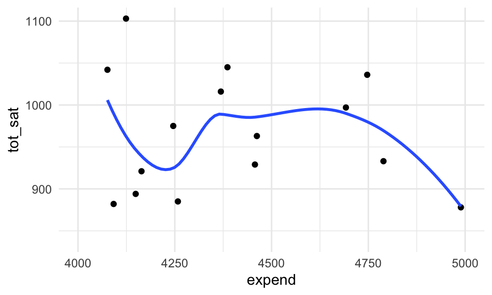
You can add fig.height=2, fig.width=7 into the header of a chunk. For example, the chunk above had:
{r,r my_figure, fig.height=2, fig.width=7}
You can also set overall size in your setup chunk via
knitr::opts_chunk$set(echo = TRUE,
fig.width = 5,
fig.height = 3,
out.width = "75%",
fig.align = "center")The fig.width controls how big the figure is when plotting. The figure is then rescaled to fit into the area dictated by out.width. The “75%” can be replaced with, e.g., “4in” for 4 inches. The percent is the percent of text width of the page.
If you make the figure smaller, the axes labels and line thicknesses and everything get larger, relatively speaking. Compare the following, with the header chunks printed out for clarity:
{r,r, fig.height=2, fig.width=7, out.width=“100%”, out.height=“100%”}
ggplot( airquality, aes( day_cntr, Ozone ) ) +
geom_point(na.rm=TRUE) + geom_line(na.rm=TRUE)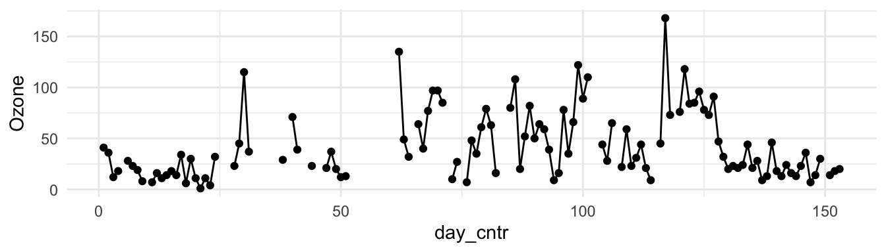
{r,r, fig.height=2, fig.width=16}
ggplot( airquality, aes( day_cntr, Ozone ) ) +
geom_point(na.rm=TRUE) + geom_line()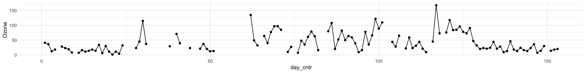
See how the second figure is a bigger figure rescaled to fit into a smaller space (width-wise). Everything thus looks tiny. The other plots in this document are fig.height=2, fig.width=7.
If the plot is small, but out.width is large, it will not scale up but instead keep to the desired size. The out.width only ensures plots are no larger than given. E.g. fig.width=3, fig.height=2, out.width="100%" gives:
{r,r, warning = FALSE, fig.width=3, fig.height=2, out.width=“100%”}
ggplot( airquality, aes( day_cntr, Ozone ) ) +
geom_point(na.rm=TRUE) + geom_line()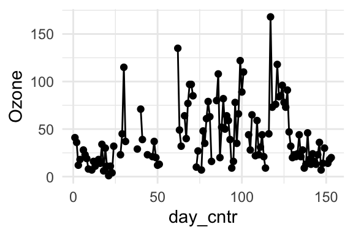
There are three ways to export plots from RStudio. You can click on the export button on RStudio. If you say “Copy to Clipboard” you will get a bitmap plot (basically a digital photo of your plot), which will be fuzzy if you blow it up in your report. One way around that is specify a larger width and height in the dialog box before you save. “Save as Image” has the same concern.
The “Save to PDF” will save a vector image of your plot. Vector images remember the dots and lines used for your plot, and will be crisp if you make them large or small.
You can also use ggsave as follows:
ggplot( airquality, aes( day_cntr, Ozone ) ) +
geom_point(na.rm=TRUE) + geom_line()
ggsave( "my_ac_plot.pdf", width = 8, height=2 )This allows you to specify the width and height and then, if you want to re-make your plot, it will save the exact same size. This is also good if you have a series of plots you want to make the same size.
I recommend saving to PDF. The image bitmap plots always look a bit lousy.
Very often, making your plot shorter will make it better. Big vertical distance amplifies variation and makes it hard to follow trends.
Compare
{r,r, fig.height=1.5, fig.width=7, out.width=“100%”, out.height=“100%”}
ggplot( airquality, aes( day_cntr, Ozone ) ) +
geom_point(na.rm=TRUE) + geom_line(na.rm=TRUE)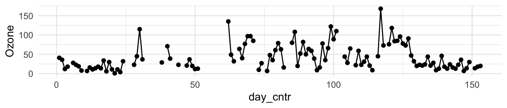
{r,r, fig.height=5, fig.width=7, out.width=“100%”, out.height=“100%”}
ggplot( airquality, aes( day_cntr, Ozone ) ) +
geom_point(na.rm=TRUE) + geom_line(na.rm=TRUE)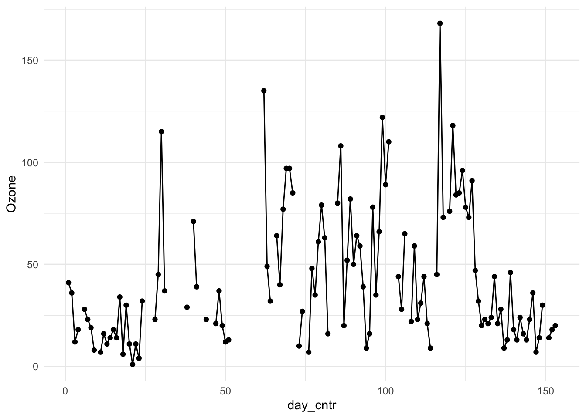
Similarly, swapping the x and y axes of a plot can make labels a lot easier to read.
Consider the following two plots:
ggplot( dat, aes( x = Category, y=per_students ) ) +
geom_bar(stat="identity") +
theme(axis.text.x = element_text(angle = 90)) +
scale_y_continuous( limits = c(0,60), breaks = c(0,10,20,30,40,50,60) ) +
labs( y = "Percent Student Population", x="" )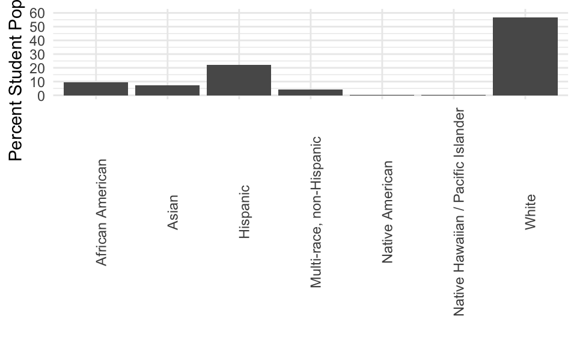
{r,r, fig.height=2, fig.width = 6, out.width=“100%”}
ggplot( dat, aes( x = Category, y=per_students ) ) +
geom_bar(stat="identity") +
theme(axis.text.x = element_text(angle = 90)) +
labs( y = "Percent Student Population", x="" ) +
scale_y_continuous( limits = c(0,60), breaks = c(0,10,20,30,40,50,60) ) +
coord_flip() +
theme(axis.text.x = element_text(angle = 0)) 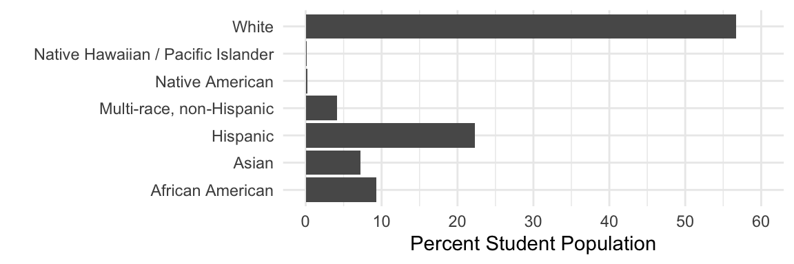
Flipping is easy to do. Just add coord_flip() to your ggplot command! The choice of vertical height of the plot also matters here. Make your bars not too thick, but still a nice amount thick so your labels are well spaced.
For the first plot, we had to rotate the labels so they didn’t overlap. Other choices are likely possible.
Also notice the rotating of the axes labels. With coord_flip be careful as to what element you are controlling. Usually fiddling around will get it right in no time!
Note: these data are from the Massachusetts Department of Elementary and Secondary Education, school year 2019-20, for the state.
For this, read the “Graphics for Communication” chapter of R for DS: https://r4ds.had.co.nz/graphics-for-communication.html